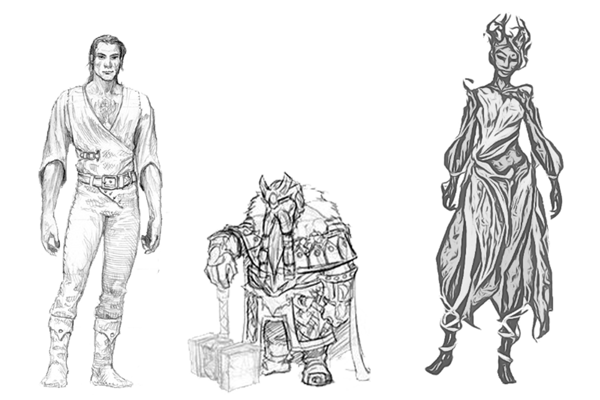

30 maja Lands of Despair doczekał się pierwszej oficjalnej wersji strony internetowej. Po kilku tygodniach wytężonej pracy prezentujemy oficjalną witrynę naszego systemu RPG, na którym znajdziecie podstawowe informacje na temat projektu, planowane wydarzenia a także postęp prac nad systemem. W najbliższej przyszłości dołożymy wszelkich starań aby uzupełnić witrynę wiedzą i wiadomościami o świecie i mechanice naszej gry, do tego czasu zapraszamy do przejrzenia wątków już istniejących :).
20 maja w Poznańskim Klubie Fantastyki 'Druga Era' odbędzie się kolejna już prezentacja naszego systemu Tabletop RPG Lands of Despair połączona z próbnymi sesjami. Mamy nadzieję, że zaciekawi was wykreowany przez nas świat w klimatach Dark Fantasy. Serdecznie zapraszamy zainteresowanych i obiecujemy dać z siebie wszystko :). Startujemy o godzinie 15.00!
13 maja w Inowrocławskim Klubie Fantastyki 'Cerber' odbyły się pierwsze oficjalne testy silnika Lands of Despair. Zagraliśmy razem trzy sesje i przeżyliśmy niesamowite przygody w krainach rozpaczy. Udało nam się zauważyć kilka niedociągnięć systemu a gracze podsuneli bardzo ciekawe rozwiązania, które niebawem zagoszczą w zaaktualizowanej wersji gry! To były wspaniałe godziny spędzone w wyśmienitym towarzystwie :). Serdecznie dziękujemy za przybycie i wspólną grę i mamy nadzieje, że nie jest to wasza ostatnia przygoda w świecie Lands of Despair!
W piękne, słoneczne sobotnie popołudnie 13.05.207 po raz pierwszy w historii projektu zanurzyliśmy się w mroczny śwat Krain Rozpaczy wraz z graczami Inowrocławskiego klubu fantastyki "CERBER"!. Zabawa była wyśmienita, uzyskaliśmy opinie, reakcje i odczucia. Zobacz zdjęcia! TUTAJ. Zabieramy się do pracy, a już teraz chcielibyśmy gorąco zaprosić wszystkich zainteresowanych na najbliższą prezentację i otwarte testy Lands of Despair w Poznaniu! Więcej info TUTAJ. Serdecznie Zapraszamy!.
5. maja w Bydgoskim Klubie Fantastyki 'Maskon' odbyła się nasza druga z kolei prezentacja Lands of Despair. I tym razem klubowicze nie zawiedli i zjawili się licznie na naszym pokazie. Członkowie "Maskonu" zarzucili nas gradem różnorodnych pytań od tych z dziedziny ekonomii świata przez pytania o magię na krasnoludzkim rozmnażaniu kończąc :). Mamy nadzieje, że to nie nasza ostatnia wizyta w klubie i, że nadarzy się okazja aby zagrać razem na naszym systemie :). Dziękujemy i serdecznie pozdrawiamy!
Link do wydarzenia na Facebooku: TUTAJ.
22. Kwietnia w Inowrocławskim Klubie 'Cerber' odbyła się pierwsza prezentacja naszego autorskiego systemu. Dzięki życzliwości klubu mieliśmy dostęp do sali kinowej 56. Bazy Lotniczej w Inowrocławiu na której pojawiło się ok. 30 zainteresowanych! Pomimo tremy i tego, że był to nasz debiut, prezentacja odbyła się bez większych przeszkód i pozwoliła nam na znalezienie błędów i jeszcze lepsze przygotowanie się na przyszłość :). Korzystając z gościnności Klubu Cerber i dużej ilości zainteresowanych udało nam się zaplanować pierwsze otwarte testy systemu, które odbędą się 13.05.2017 r. w siedzibie klubu. Dziękujemy i serdecznie zapraszamy!
Link do wydarzenia na Facebooku: TUTAJ.
Magia jest początkiem i końcem uniwersum Lands of Despair i wywiera niezwykle silny wpływ na historię i dzisiejsze ukształtowanie Kontynentu. U zarania dziejów, ludzie opanowali umiejętność splatania magii co doprowadziło do powstania ‘Naznaczonych’.
Owi Naznaczeni potrafili nie tylko splatać i wyczuwać magię ale i też zrozumieć naturę i w pełni okiełznać to zjawisko naginając je do swojej woli. Ceną za korzystanie z magii były liczne blizny powstałe w wyniku nieumiejętnego opanowania elementów, to właśnie od blizn, ran i znamion pochodzi nazwa Naznaczonych. Gdy na kontynencie rozwineła się cywilizacja i czas magii wszedł w Erę Świetności, Naznaczeni odkryli sekret dzięki, któremu mogli otworzyć Wrota do innych światów. Rozpoczeła się Epoka Podróży i Ekspansjii. Ludzie dotarli do Świata Latających Gór gdzie nawiązali kontakt z Krasnoludami, którzy w przeciwieństwie do wciąż prężnie rozwijającej się Ludzkości byli na skraju zagłady. Lata Ekploatacji złóz i drążenia w skale doprowadziły świat krasnoludów do ruiny. Latające góry zaczęły się rozpadać a wraz z nimi w otchłań spadały krasnoludzkie miasta. Ludzie będąc pod wrażeniem technologii krasnoludzkiej oraz lojalności tego ludu postanowili zaoferować pomoc i przeprowadzić Krasnoludów na ich latających okrętach przez Wrota na kontynent.
Z początku obie rasy dogadywały się świetnie, Krasnoludy pracowały ramię w ramię z ludzkimi rzemieślnikami, ograniczeni jedynie zakazem górnictwa i wydobycia aby nie powtórzyć losu Krasnoludzkiej Ojczyzny. Niestety wraz z podróżami i otwieraniem kolejnych wrót, na Kontynent spadło widmo Choroby, która począwszy od zwierząt i roślin zaczęła dzisiątkować populacje. Magowie szukając sposobu na zatrzymanie Choroby skontatkowali się z wyniosłą rasą Kaefów, Ludzi pokrytych korą i zielenią, tych którzy służyli naturze. Z roku na rok przez wrota zostało sprowadzonych setki Kaefów by korzystając ze swoich zdolności zasadzić Drzewa Życia, które co prawda nie uleczyły Choroby lecz zatrzymały jej rozwój i pozwoliły roślinności kontynentu na egzystencje pomimo skażenia. Gdy głód i śmierć spowodowany przez chorobę ustąpił choć na chwilę, ludzie oskarżyli Naznaczonych o sprowadzenie zarazy, rozpoczynając krwawe pogromy magów.
W zaledwie kilka lat z powierzchni Kontynentu usunięto wszelką działalność związaną jak kolwiek z magią. Naznaczonych zabito a ich twierdzę zamieniono w siedzibę organizacji, która ma za zadanie powstrzymac chorobę i znaleźć lekarstwo. Niedobitki Naznaczonych rozpierzchły się po Kontynencie chowając głęboko w w sekrecie swoje umiejętności i zaprzestając swoich praktyk pod karą okrutnej śmierci. Niestety po zlikwidowaniu Naznaczonych ludzkość nie zatrzymała się w swojej nienawiści i zwróciła się przeciw Krasnoludom i Kaefom a rasizm i prześladowania były na porządku dziennym.
O grze
Koncept

Lands of Despair to polskie RPG w klimacie dark fantasy tworzone przez grupę przyjaciół zafascynowanych Role Play'em i światami Dark Fantasy takimi jak Warhammer. Jesteśmy niewielką grupą graczy, która od wielu lat hobbistycznie gra i interesuje się systemami RPG. W pewnej chwili założenia rozgrywki systemów, z jakimi mieliśmy styczność, były tak rozbieżne z tym, czego oczekiwaliśmy, że postanowiliśmy działać. Zamiast szukać idealnego dla nas systemu spośród wszystkich (a jest ich niemało), lub modyfikowac po raz setny poczciwego Warhammer 'a zdecydowaliśmy się na stworzenie własnego, zupełnie od podstaw.Warhammer, Warhammer 2ed, Polskie RPG, D&D
Za cel stawiamy sobie stworzenie mechaniki gry w taki sposób, by stawiała wyzwanie przed graczami, jednocześnie była rozbudowana, lecz prosta i intuicyjna. Za najważniejsze cechy systemu uznaliśmy:
• Jasny i prosty system rozwoju Bohatera i Umiejętności, umożliwiający wiele ścieżek rozgrywki.
• Cały system rozgrywki jest niemal w całości pozbawionych liczb. Chcemy w ten sposób ułatwić graczowi rozgrywkę, jednocześnie nie rezygnując ze skomplikowania i rozbudowania mechanizmów prowadzących grę.
• Interesujący i bardzo taktyczny system walki oparty na planszy z wieloma elementami.
• Duży nacisk na rozgrywkę fabularną, skupienie się na osobowości graczy i zwrócenie uwagi na potrzeby Bohatera, takie jak Głód, Zmęczenie czy Zdrowie Psychiczne.
• Zupełnie inne, w porównaniu do wszystkich znanych nam systemów, podejście do Magii w grze. Używanie jej jest zupełnie dowolne, Gracz może manipulować zaklęciami wedle własnej woli, jednak jest to w pewien sposób ograniczone.
• Zupełnie autorski świat, całe uniwersum, niepozbawione swojej historii, map, podziału politycznego i wiele innych.
• I w końcu elastyczność w dobieraniu elementów prowadzenia rozgrywki. Grając w Lands of Despair, grający sami określają jaki elementy zaproponowane przez nas, zostaną przeniesione do ich rozgrywki. W prosty i nie destrukcyjny sposób dla jakości rozgrywki, wiele elementów może zostać pominiętych, lub uproszczonych.
O grze
Kalendarz
19 Maj 2015 r. - Pomysły dotyczące autorskiego systemu RPG przeradzają się w faktyczny projekt. Rozpoczęto pracę nad Lands of Despair (wówczas bez nazwy).
Lipiec 2015 r. - Pierwsza, testowa wersja gry zostaje przygotowana.
Lipiec 2015 r. - Rozegrana zostaje pierwsza sesja na systemie Lands of Despair (wciąż bez nazwy).
Wrzesień 2015 r. - Aktualne rozwiązania mechaniczne zostają wyrzucone do kosza. Rozpoczynają się prace nad zupełnie nową wersją.
Listopad 2016 r. - Druga wersja gry znajduje się w fazie grywalnej. Rozpoczynają się liczne testy.
Styczeń 2016 r. - Ponownie aktualny stan Lands of Despair zostaje uznany za niegrywalny. Rozpoczynaj się prace nad trzecią wersją gry.
Luty 2016 r.- Autorski system RPG otrzymuje ponad 30 propozycji nazwy. Finalnie Lands of Despair zostaje wytypowane jako oficjalna nazwa.
7 Czerwiec 2016 r. - Główne założenia mechaniczne oraz rozwiązania dotyczące Lands of Despair zostają spisane. Rozpoczyna się faza testów.
Październik 2016r. - Po dłuższych testach część mechanizmów prowadzenia gry zostaje przeniesiona do kolejnej wersji, nad którą prace zostają rozpoczęte.
(Tym razem zmiany nie są już tak duże. Główne, najważniejsze dla gry elementy pozostają niezmienione, albo zostają delikatnie zmieniane)
Grudzień 2016r. - Czwarta wersja gry trafia do fazy testów, która przynosi pozytywne wyniki. Dokonywane są delikatne zmiany i rozpoczęto pracę nad wszystkimi rozwiązaniami, niebędącymi głównymi mechanikami gry.
Styczeń 2017r. - Rozpoczęto pracę nad pierwszym, pełnym Podręcznikiem (wersji Alfa).
Maj 2017r. - Rozpoczęto prezentacje systemu w klubach fantastki na terenie centralnej Polski oraz otwarte testy.
O grze
Modułowość
Zdajemy sobie sprawę, że rozwiązania, które proponujemy mogą nie być odpowiednie dla wszystkich grup stykających się z Lands of Despair, dlatego też postanowiliśmy pójść w kierunku modułowości. Dzięki temu rozwiązaniu bardziej wymagający gracze, szukający wyzwań i wrażeń, mogą urozmaicić swoje doświadczenie z obcowania z Krainami Rozpaczy wprowadzając do swojej rozgrywki moduł Wytrzymałości, Osobowości Bohatera, czy taktycznej Planszy, z kolei osoby nie posiadający doświadczenia z grami RPG mogą zrezygnować z ów rozwiązań, nie tracąc na jakości zabawy.
Modułowość sprawia, że system jest przystępny dla zupełnie każdej grupy grających.
Nie ma absolutnie żadnych przeszkód, by z czasem, podczas rozgrywania coraz to kolejnych scenariuszy czy kampanii, dokładać ów moduły do swojej rozgrywki!
Lista modułów:
Wytrzymałośc - Moduł wprowadzający do gry element poszerzający odzwierciedlenie stanu zdrowa Bohatera. Przy jego wykorzystaniu Mistrz Gry może kontrolować i wpływać na poziom Głodu, Zmęczenia oraz Stanu Psychicznego Bohaterów, a przed Graczami stanie wyzwanie polegające na zaspokajaniu podstawowych potrzeb swoich protagonistów. Pozwala to na pogłębienie immersji, lepsze określenie stanu prowadzonych przez Graczy Bohaterów i wprowadzenie wyzwania. Koniec z wielodziennymi wyprawami, podczas których Bohaterowie nie sypiają, żadko jedzą, a rozmaite przeżycia nie mają wpływu na ich stan psychiczny!
Osobowość - Nierzadko zjawisko bezbarwności Bohaterów, tudzież brak charakteru, czy spójnych cech osobowości, doskwiera bardziej doświadczonym graczom. My również zauważyliśmy ów problem i proponujemy proste i skuteczne rozwiązanie. Stosując moduł Osobowości Gracze mają szansę przypisać szereg cech osobowości Bohatera, a Mistrz Gry podczas rozgrywki może wręcz egzekwować ich przestrzegania. Oczywiście Bohater ma prawo zmienić się wraz z czasem, niekiedy rozmaite doświadczenia wpływają na jego charakter, na to również zwróciliśmy naszą uwagę - W podręczniku do gry znajdą się odpowiednie zasady regulujące korzystanie z ów narzędzia. Gwarantujmy, że moduł Osobowości diametralnie zmieni nudnych, nieciekawych protagonistów, w pełnych, określonych, posiadających charakter Bohaterów!
Plansza Bitewna - Notorycznym problemem podczas sesji są kłutnie spowodowane różnorakim wyobrażeniem sobie miejsca akcji, na którym toczy się walka. Każdy gracz jest wyjątkowy i w zupełnie inny sposób wyobraża sobie otoczenie, a Mistrz Gry jest tylko człowiekiem i nie jest w stanie opisać każdego drzewa znajdującego się w lesie tak, by wszyscy postrzegali miejsce rozgrywania się bitwy jednakowo. Z pomocą przychodzi moduł Planszy Bitewnej. Skonstruowana na bazie hexów (sześciokątów foremnych) plansza pozwala precyzyjnie określić znajdujące się na polu walki elementy, przeszkody, określić położenie Bohaterów Graczy oraz antagonistów. Proste i logicznie rozwiązane reguły prowadzenia walki w oparciu o planszę pozwalają na taktyczne rozgrywanie bitew, a przede wszystkim eliminują nieporozumienia związane z trdnością przedstawienia miejsca akcji.
System Rzemiosła - Kolejnym z przygotowywanych przez nas modułów jest popularny głównie w grach komputerowych crafting. System Rzemiosła w naszym systemie RPG to proste, wygodne a co najważniejsze niezwykle ciekawe narzędzie mające na celu oddanie w ręce gracza dodatkowych możliwości odgrywania swojej postaci i wejścia w świat mrocznej codzienności Lands of Despair jeszcze bardziej. System rzemiosła nie jest jedynie ukłonem w stronę graczy ale także świetnym modułem dla mistrzów chcących wyegzekwować na swoich graczach elementy podnoszące realizm i wiarygodność świata takie jak: zarabianie, przygotowywanie dla siebie sprzętu i posiłków czy też odgrywanie postaci na podstawie jej profesji.
O grze
Świat Lands of Despair
Mamy doczynienia z naprawdę dużym i różnorodnym światem
zamieszkałym przez trzy wyjątkowe rasy, w którym każdy znajdzie idealny zakątek do prowadzenia
własnej kampanii. Różnorodność terenów Kontynentu wiąże się również z dziesiątkami niezwykłych
bestii, roślin czy stylów architektonicznych. Idealnie komponuje się to z mechaniką naszej gry i
pozwala Wam graczom na stworzenie unikalnych bestii czy też przygód w, którymkolwiek z zakątków
Kontynentu. Świat Lands of Despair jest tak bogaty, że informacje z podręcznika to tylko czubek góry
lodowej i kto wie czy nie będziemy chcieli wydać Kompendium o Świecie aby każdy kto chce mógł się
jeszcze mocniej zagłębić w proponowane przez nas uniwersum.
O grze
Rasy Kontynentu

Człowiek - Rasa idealna, stworzona przez Duchy, którzy przelali cząstkę swej mocy do tego tworu, by później zamieszkać między nimi i prowadzić ten lud ku świetności i osiągnąć Khar Sevad (ostateczny eden). Każdy z Duchów Stworzenia odpowiednio przygotowywał ów Świat. Duch Ziemi zbudował ląd, wzniósł góry i doliny, zaszczepił w nich metal i kryształki. Duch Ognia zawiesił słońce na nieboskłonie, tchnął płomienie w ziemię, zbudował wulkany, utworzył pustynie. Duch Morza rozlał wodę do basenów morskich i powiódł nitki rzek, zawiesił w powietrzu chmury i stworzył deszcz, który miał ukoić popękaną ziemię. Duch Życia zasiał drzewa i krzewy, stworzył zwierzęta, uformował człowieka. Duch Wiatru stworzył wiatr i tchnął podmuchy w lasy, na otwartych przestrzeniach i w górach zasiał huragany, a i chmury wprawił w ruch. Duch Dźwięku nadał istotom zamieszkującym ten świat głosy, nauczył rośliny szumieć, stworzył muzykę. Duch Mroku obdarzył świat nocą i księżycem, dał wszystkim istotom spoczynek pod postacią snu. Na końcu Duch Mocy tchnął w świat magię i zawiesił drugi, błękitny, mniejszy księżyc nad Kontynentem. Przybrali odpowiednie dla siebie postaci i zamieszkali między ludźmi. Przez wiele lat prowadzili ich ku dobremu, nauczali, do chwili Haiied ‘Rav (ery samodzielności, drugiej fazy). Od tej chwili ukryli się przed człowiekiem, dali mu swobodę działania i obserwowali jego poczynania. Człowiek jednak zboczył z powierzonej mu drogi. Idealny, zdawałoby się, twór, okazał się być zbyt idealny, otrzymał zbyt wiele przywilejów i odsunął się od swoich Bogów. Z czasem pojawili się bożkowie, pomniejsze wierzenia, nieistniejące istoty, których ludzie poczęli czcić, a Duchy Stworzenia stopniowo popadały w zapomnienie. By przywrócić bieg świata na odpowiedni tor, Duchy Stworzenia przerwały drugą fazę, ukazały się człowiekowi, potępiły go. Duch Ziemi ofiarował światu trzęsienia ziemi. Duch Ognia poparzył człowieka płomieniem. Duch Morza zesłał grad i sztormy. Duch Wiatru posłał po lądzie huragany i trąby powietrzne. Duch Dźwięku nauczył ludzi łkać, dał światu ciszę i niepewność. Duch Mroku ofiarował świtu strach, przerażenie, zesłał na człowieka zmęczenie. Duch Życia dał światu śmierć i uczynił ciała istot zamieszkujących Kontynent wrażliwymi. Na końcu Duch Mocy ograniczył zdolności intelektualne i magiczne człowiekowi. Wspólnie niemal zrównali człowieka do poziomu zwierzęcia. Nakazali mu posłuszeństwo i ponownie ukryli się między ludźmi. Jednak tym razem człowiek pamięta i obawia się kolejnych potępień. Ludzie wierzą, że Choroba jest kolejną karą. Zesłana na nich za zbyt zuchwałe korzystanie z mocy, którą otrzymali. Obawiają się kolejnego nadejścia Duchów. Niepewnie spoglądają w przyszłość…
Kaef - Są rasą drzewo-podobnych, niezwykle inteligentnych i wyniosłych istot posiadających zdolności manipulacji “tajemniczą energią”. Blisko tysiąc przedstawicieli tej rasy przybyło na wezwanie ludzi, by ocalić ginącą roślinność skażoną przez “chorobę”. Gdy zaraz po tym nastały pogromy czarodziejów, kaef straciły możliwość powrotu do swojej ojczyzny, i rozpoczęły życie pośród ludzi i krasnoludów, zakładając swoje siedziby oraz początkując rozwój swojego narodu przez kolejne setki lat życia na Kontynencie.
Kaef są bardzo różnorodne a ich rasa obfituje w różnorakie “gatunki” od smukłych przedstawicieli przedstawiających nieco olchy po niskich, krępych ciemnych niczym dęby osobników. Różnorodność ta jest jest jeszcze większa jeśli spojrzymy na podział płciowy kaef. Żeńskie przedstawicielki tej rasy są często pokryte kolorowymi naroślami i ozdobnymi elementami podczas gdy męscy osobnicy kaef są z reguły jednolitego koloru i znacznie większej postury niż swoje żeńskie odpowiedniki.
Ta przedziwna rasa jest ze swojej natury pokojowa i prowadzi życie z dala od konfliktów. Jeśli chodzi o jakąkolwiek walkę to kaef podejmują ją jedynie w obronie własnej lub własności swojego ludu, w takich potyczkach kaef władają bronią ludzi i krasnoludów a do ich ulubionych należy wszelkiej maści drzewcowy rynsztunek: włócznie i kostury.
Kaef są rasą niemą i porozumiewają się za pomocą telepatii a ich umiejętności manipulacji duchem pozwala im na przejęcie kontroli nad dzikimi bestiami i stworami wszelakiego typu.
Krasnolud - Ocalone przed zagładą swojego własnego świata, humanoidalne istoty z kamienia zaszczyciły swoją obecnością świat Krain Rozpaczy, jeśli wierzyć starym księgom, w okolicach 600 roku 1 ery. Zostało przyjętych jednak tylko kilka tysięcy krasnoludów, w myśl zapewnienia przetrwania ich gatunkowi. Zrodzony z Kamienia, niskiego wzrostu, zwaliste, baryłkowate istoty wraz z sobą przywiodły rzemiosło Run i po dziś dzień specjalizują się w wyrabianiu broni i pancerzy, oraz obrabianiu kryształów i metali. Mają oni jednak komplety zakaz na górnictwo. Ich niepohamowana żądza, by eksplorować moc i siłę kryształów, metali oraz kamieni doprowadził ich świat ku zagładzie. Oni sami również nie są skorzy, by popełnić ponownie podobny błąd, stąd też stronią od Kopalń i jaskiń.
Są rasą niesłychanie jednolitą. Nie posiadają podziału na płeć, rodzą się poprzez zaszczepienie “życia” w kamieniu. Zazwyczaj odbywa się to gdzieś głęboko w jaskiniach górskich. Konieczne ku temu jest odpowiednie przygotowanie klejnotu i zaklęcie go runami. Ów kamienny delikwent, po około 40-60 latach tkwienia w żywym kamieniu, musi się z niego wydostać. Cztery z pięciu takich prób owocują sukcesem, i nowa krasnolud przychodzi na świat. Co ciekawe, posiada ona już podstawową wiedzę związaną z historią swojej rasy, oraz podstawowe przystosowanie do życia wykształcone przez jej Twórców. Ponadto posiada już ponadprzeciętne zdolności rzemieślnicze oraz bojowe. Są rasą najpewniej najstarszą z wszystkich spotykanych dziś na ziemiach Kontynentu. Potrafią przeżyć trzech, zdrowych ludzi.
Są najodporniejszą z wszystkich ras, wyśmienicie sprawdzająca się w boju, oraz oferująca kunsztowne rzemiosło na mistrzowskim poziomie. Najrzadziej dotykana szponem “Choroby”, jednak nie jest odporna. Na mocy prawa gościnności zabrania się wymuszonych badań na krasnoludach, a nawet te dobrowolne (tak, zdarzyły się) nie przynosiły żadnych efektów. Ciało krasnoluda dla przeciętnego badacza innej rasy jest niczym innym jak kamienną bryłą, z połyskującym w głębi czerwonym klejnotem.
O grze
Klasowość/Zawody
Jako doświadczeni gracze zauważyliśmy, że klasowość w grach RPG wypada zazwyczaj umiarkowanie dobrze. Zawodów do wyboru jest albo dużo, lecz nie przekładają się praktycznie na rozgrywkę, albo niewiele, i nie każdy grający znajdzie coś dla siebie. Zdecydowaliśmy się odejść od standardowej listy przygotowanych przez nas zawodów, by pozwolić grającym na zupełną dowolność. Stworzyliśmy kilka prostych reguł, według których w przysłowiowe 5 minut można stworzyć grywalny zawód. Dzięki takiemu rozwiązaniu możliwości są praktycznie nieograniczone. Każda sesja czy scenariusz może być zupełnie indywidualnym dośiwadczeniem, bo przecież żadko zdarza sie, że mamy szansę zagrać Dworskim nauczycielem szermierki, albo Królewskim błaznem.
Wybór klasy owocuje otrzymaniem kilku stałych Pozoimów rozwinięcia Atrybutów (np. Gwardzista otrzyma poziom rozwinięcia Siły i Budowy), pęczek poziomów rozwinięcia konkretnych Umiejętności (np. Gwardzista otrzymałby Punkt dla zbioru Obrona, Broń Lekka, Atletyka), oraz umiejętność specjalna, która może być zdolnością pasywną (np. Złodziej może otrzymać zdolność "Włamywacz - Jednorazowo pomija test otwierania zamków").
Ważne jest, by skrupulatnie przestrzegać zasad rozgrywki w kontekście korzystania z umiejętności specjalnych - Taka zdolność może być wykorzystana raz na dzień rozgrywki, oraz podczas procesu tworzenia takiej Klasy, zaleca się zachować ostrożność, by grający nie otrzymał zbyt poteżnych narzędzi. W kwestii tworzenia zawodów MG ma absolutną rację.

{kind=link}
{kind=link}
{kind=link}
{kind=link}
{kind=link}
{kind=link}